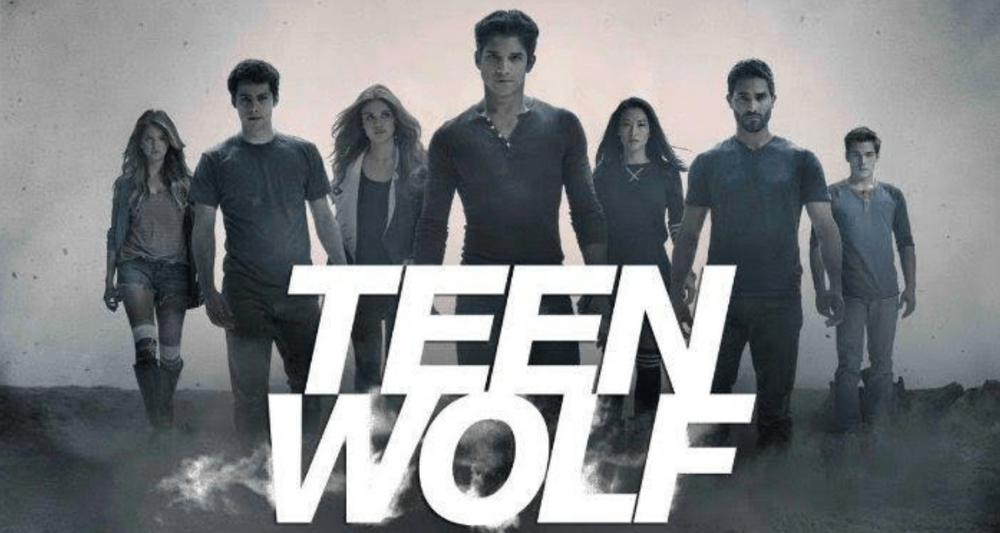

Scott McCall(Tyler Posey)
Scott Gregorio McCall é o principal protagonista da série Teen Wolf. Scott é um Lobisomem Verdadeiro Alfa de 46 anos de idade e o Alfa da Alcatéia McCall..
Mieczyslaw "Stiles" Stilinski(Dylan O'Brien)
Ele tambem é um personagem principal, sendo o melhor amigo de Soctt McCall.
Derek Hale(Tyler Hoechlin)
Ele inicialmente era um mentor para Scott McCall, mas amizade se modificou depois que Derek se tornou um Alfa e começou a fazer escolhas que Scott considera imoral.
Allison Argent(Crystal Reed)
É uma personagem principal e Co - Protagonista ao lado de seu primeiro amor Scott McCall e seus Amigos.
Peter Hale(Ian Bohen)
É um Lobisomem e foi o Principal Antagonista das Temporadas 1 e 4.
Jackson Whittemor(
Jackson Whittemore foi o grande inimigo de Scott McCall nas temporadas 1 e 2. Ele retornou de Londres para Beacon Hills na segunda metade da 6 ª temporada.
Lydia Martin(
É uma Co-Protagonista e no inicio da serie era bastante patricinha e arrogante porém bastante inteligente, com o tempo descobre-se uma Banshee e iniciou sua Aventura no mundo Sobrenatural ao lado da alcateia McCall.
